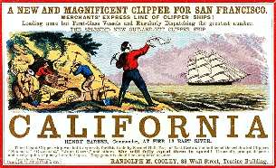

Борис Акунин
Мой календарь
Один из самых досадных дней в российской истории.
24 января 1848 года плотник Джеймс Маршалл обнаружил в калифорнийской речке золото. Началась знаменитая Калифорнийская золотая лихорадка. 300 тысяч старателей кинулись на край света в поисках счастья и нарыли-намыли 370 тонн драгоценного металла.
Досадность заключается в том, что работодатель плотника, средней руки предприниматель Джон Саттер всего несколькими годами ранее выкупил калифорнийскую колонию у России за смешную сумму в 30 тысяч долларов. В Санкт-Петербурге решили: на кой нам какая-то заморская тьмутаракань, куда полгода добираться? Одни расходы.
Но Российская империя не была бы Российской империей, если бы наступала на грабли только один раз. Два десятилетия спустя она повторит аттракцион неслыханной щедрости (назовем это так): продаст за ненадобностью и Аляску. А там что? Правильно. Найдут еще больше золота, и начнется новая золотая лихорадка, самая монументальная в истории.
Давайте скажем империи спасибо за бесценный урок. Я бы сформулировал его так: не мысли мелко, не довольствуйся сиюминутным копеечным наваром. Лозунг сегодняшнего дня «Лучше журавль в небе, чем синица в руках». Будет день и противоположной планиды, но 24 января размениваться на медяки не следует.